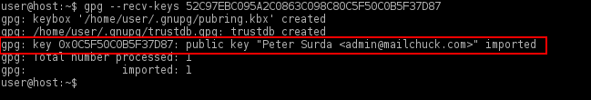
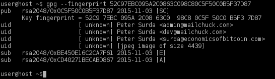
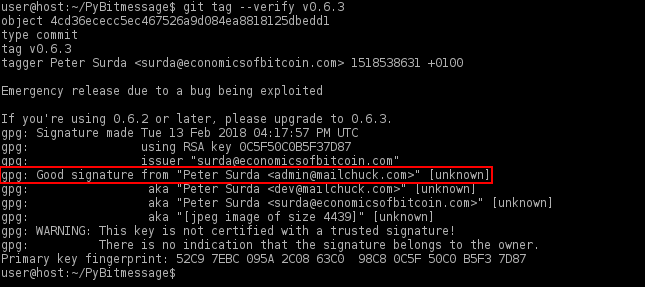

BitMessage email alternative. Asynchronous, decentralized, encrypted communication.
 Warning:
Warning:
- Bitmessage still relies on Python 2 (end-of-life since 2020). While efforts to port it to Python 3 exist, some build scripts still uses Python 2.
- Do your own research before using it
Introduction
BitMessage is a P2P asynchronous communications protocol used to send encrypted messages to another person or to many subscribers. The PyBitmessage client is written in Python with a Qt GUI. BitMessage is decentralized and trustless, meaning that users do not need to place faith in entities like root certificate authorities. The design employs strong, self-authenticating, Bitcoin-style addresses which prevents adversaries from spoofing messages so they appear to be legitimate.
For a comparison of BitMessage with other open source communications software, refer to the FAQ.
Design
The BitMessage protocol is quite flexible and robust: [1]
- Messages for offline recipients are stored for up to 28 days before being deleted.
- Proof-of-Work is relied upon to prevent spamming.
- Sender and recipient metadata is hidden by broadcasting all messages to everyone, thereby acting as a simple private information retrieval (PIR) system.
- Bridging services between the BitMessage network and legacy / regular email exist. [2]
- Additional features include subscription support and Chans (Decentralized Mailing Lists). [3]
- Stronger anonymity is possible by running BitMessage in Whonix, since it works reliably.
For other use cases, refer to the Arch BitMessage wiki.
BitMessage has not yet been independently audited by professionals to verify its security claims. That said, miscreants did use it to run a ransomware operation (over Tor) without being caught, demonstrating that it is somewhat "battle-tested." [4] While the Whonix Project will never condone criminal abuse of technology, it is hoped that dissidents in oppressive states can profit from the protocol's underlying strength.
Email Bridging Services
Note: Bridging services are not required to use Bitmessage.
Bitmessage Mail Gateway (BMG) is a service that allows for seamless integration of email (webmail or email client) and the Bitmessage network.
As of January 1, 2020, the service at bitmessage.ch that was referenced in this section is offline. For more information, see: Notice of Service Termination.
BitMessage Installation and Operations
Installation
The following instructions perform steps to install BitMessage from source code as well as digital signature verification, which is optional but recommended for better security. Once the installation process is complete, BitMessage can be started and the networking appropriately configured.
Bitmessage developers use git to sign their source code. [5] Git is a distributed version control system (VCS) that has the ability to tag specific points in history -- such as version release points -- as being important. These (git) tags can be signed and verified with GNU Privacy Guard (GPG). For a basic overview of Tagging please read: Git Basics - Tagging.
 While git is cryptographically secure, it is not foolproof. See
Web of Trust
for further information.
While git is cryptographically secure, it is not foolproof. See
Web of Trust
for further information.
Note: Unless directed otherwise, run the following commands in
Whonix-Workstation™ (Qubes-Whonix™: anon-whonix
App Qube).
Installation from source code method part 1/2.
1. Install package dependencies for compilation.
(Qubes-Whonix users note: Run
this single command in whonix-workstation-18 Template.)
sudo apt install git python3 openssl libssl-dev python3-msgpack python3-qtpy
2. Download the source code from GitHub.
git clone https://github.com/Bitmessage/PyBitmessage $HOME/PyBitmessage
3. Navigate to any Bitmessage directory.
cd ~/PyBitmessage
4. List all git tags.
git tag
Example printout:
0.6.2
0.6.3
0.6.3.2Note: The output has been truncated.
5. Further steps.
The next box will document digital signature verification and the over next box how to complete the installation.
Digital signature verification.
1. Download the GPG public key of Pete Šurda, BitMessage core developer.
- Digital signatures are a tool enhancing download security. They are commonly used across the internet and nothing special to worry about.
- Optional, not required: Digital signatures are optional and not mandatory for using Whonix, but an extra security measure for <a href="Advanced_Users.html">advanced users</a>. If you've never used them before, it might be overwhelming to look into them at this stage. Just ignore them for now.
- Learn more: Curious? If you are interested in becoming more familiar with advanced computer security concepts, you can learn more about digital signatures here: <a href="Moved:Verifying_Software_Signatures.html">Verifying Software Signatures</a>
 Warning:
Warning:
The following command using gpg with
--recv-keys is not recommended for security reasons and is
often non-functional. [6] This is not a Whonix-specific
issue. The OpenPGP public key should be downloaded from the web instead;
see also Secure
Downloads. This procedure is currently undocumented and can be resolved as per the Self Support First
Policy. Documentation contributions will be happily considered.
gpg --keyserver hkps://keyserver.ubuntu.com --recv-keys 52C97EBC095A2C0863C098C80C5F50C0B5F37D87
When finished, the output should appear similar to the following screenshot.
Figure: GPG Key Importation

2. Verify the public key fingerprint.
gpg --fingerprint 52C97EBC095A2C0863C098C80C5F50C0B5F37D87
At the time of writing, the output will appear like the following screenshot.
Figure: GPG Key Verification

3. Verify the git tag(s).
At the time of writing, 0.6.3.2 was the most current
tag. There might be a newer tag.
git tag --verify 0.6.3.2
When the tag has been verified the output should show a "Good signature" similar to the screenshot below.
Figure: Successful Verification

gpg: WARNING: This key is not certified with a trusted signature!
gpg: There is no indication that the signature belongs to the owner.This message does not alter the validity of the signature related to the downloaded key. Rather, this warning refers to the level of trust placed in the Whonix signing key and the web of trust. To remove this warning, the Whonix signing key must be personally signed with your own key.
If the following "gpg: BAD signature" message appears, the source code has been corrupted or altered during the download process.
gpg: BAD signature from "Peter Surda <admin@mailchuck.com>" [unknown]In this event, delete the source code and either wait 10-15 minutes
for the Tor circuits to change, or open up the Arm Tor Controller in Whonix-Gateway™
(Qubes-Whonix:
sys-whonix) and type "n" to create new Tor circuits. Wait
for a random period of time before repeating the steps to download the
source code and verify the git tag(s).
4. Done.
The process of digital signature verification is complete.
Installation from source code method part 2/2.
1. Checkout the git tag version.
git checkout --quiet 0.6.3.2
2. Done.
Installation of Bitmessage is complete.
Start BitMessage
Start BitMessage by running the following command.
~/PyBitmessage/src/bitmessagemain.py
When BitMessage starts for the first time, this prompt will appear: "Bitmessage won't connect unless you let it." Choose: "Let me configure special network setting first" -> press <OK>.
Figure: BitMessage Network Settings

Make the following changes:
- Proxy type:
SOCKS5 - Server hostname:
127.0.0.1 - Port:
9050.
Press <OK> and the application should be fully functional.
Figure: SOCKS5 Proxy Configuration

Upgrade BitMessage
To upgrade BitMessage run the following command.
cd $HOME/PyBitmessage
git pullSend Attachments
While explicitly attaching files is not supported, technically any file can be sent within the message body. [7]
First convert the file with base64 and then copy and paste the contents of the text file.
base64 < binary.file > text.fileDo not forget to include receiver instructions on how to decode it. In order to decode the file, the recipient can copy and paste the code into a file and convert it with the following command.
base64 -d < text.file > binary.fileIt is not very practical to send large files with BitMessage. Alternatively, a file or archive containing a collection can be GPG-encrypted and uploaded to untrusted cloud storage, with a link sent to the intended recipient(s). Two methods of encryption are possible: relying on a contact's public key or using symmetric encryption and sending the password in BitMessage. For GPG symmetric encryption, follow this example:
gpg -vv -c --cipher-algo AES256 your-file.tar.gzNote that the output of diceware (pre-installed from
Whonix 14 onward) can be used for secure passwords.
Backup User Data
To backup the BitMessage profile and all user-generated program data:
- Copy the folder under this path to your shared folder: /home/user/.config/PyBitmessage
- Copy the folder to this location to restore BitMessage data for new installs.
It is recommended to use Multiple Whonix-Workstation to safely separate BitMessage identities and running instances. For better security, do not run separate BitMessage instances concurrently in this configuration.
Footnotes
- The development of Android clients has unfortunately stalled. Connecting with a mobile client also requires a full node running on the user's PC.
- The popular bitmessage.ch service was taken offline on 1 January 2020.
- https://wiki.bitmessage.org/index.php/Decentralized_Mailing_List
- https://www.bleepingcomputer.com/news/security/chimera-ransomware-uses-a-peer-to-peer-decryption-service/
- https://github.com/Bitmessage/PyBitmessage/issues/108
- https://forums.whonix.org/t/gpg-recv-keys-fails-no-longer-use-keyservers-for-anything/5607
- https://tedjonesweb.blogspot.com/2013/06/how-to-send-files-like-e-mail.html
- https://wiki.bitmessage.org/index.php/Keys.dat
- https://wiki.bitmessage.org/index.php/Messages.dat